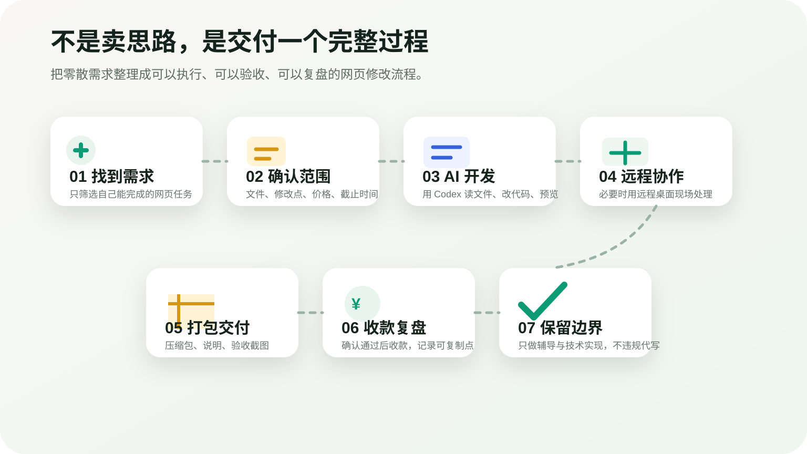
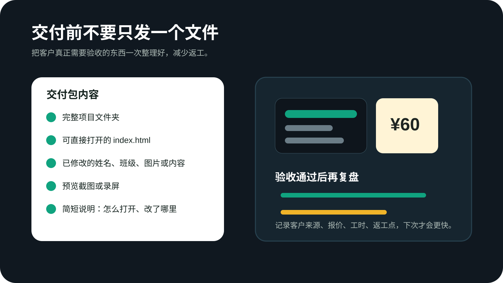

AI 接单 · Codex · 网页修改 · 交付复盘
我用AI帮大学生做网页作业，10分钟跑通一单赚60元｜找客户到交付完整教程
这期不是讲“灵感”和“鸡血”，而是拆一个很小但完整的真实流程： 怎么找到网页设计类需求，怎么确认对方要改什么，怎么借助 AI/Codex 快速完成网页文件修改， 最后怎么打包交付并收款。
在 YouTube 观看本期视频开始前你要准备什么
- 能打开和修改静态网页文件，至少知道
index.html、css、images大概是什么。 - 一个 AI 编程工具。视频中核心思路是用 Codex/AI 读取项目文件、定位修改点、直接改代码。
- 一个本地编辑和预览环境，最简单就是浏览器双击打开 HTML 文件；复杂一点可以用 VS Code 或本地静态服务器。
- 必要时准备远程桌面工具，例如视频里提到的 ToDesk，用来在客户电脑上协助打开、检查和打包文件。
- 一份清晰的沟通模板：先确认需求、价格、交付物和是否允许外部辅导，再开始操作。
本期提到或可参考的工具
先判断：你不是要卖“AI 很火”，而是要卖结果
视频开头先点出一个现实问题：AI 很火，很多人也尝试过用 AI 赚钱， 但真正能赚到钱的人，通常不是把“我会用 AI”当卖点，而是把 AI 放进一个能交付的场景里。 本期选择的场景很小：帮别人处理一个网页设计类任务。
这个案例的关键不是“网页有多复杂”，而是整个链路跑通了： 找到需求、聊清楚任务、拿到文件、用 AI 完成修改、让对方验收、收款。 对新手来说，先跑通一单，比一上来追求高客单价更重要。

为什么网页设计类需求适合新手练手
视频里提到，网页设计、简单前端页面、课程展示页这一类需求，对新手相对友好， 因为它们通常有几个特点：文件结构简单、结果容易预览、客户能直接看懂改没改好， 而且很多需求只是替换文字、图片、布局和样式。
但这类任务也最容易踩合规坑。建议你把服务定位成“技术辅导/页面修改协助”： 帮对方理解怎么改、帮忙排错、帮忙整理已有文件，而不是承诺“代写整份作业”。
更适合接的新手任务
- 已有网页文件，但图片路径错了、样式乱了，需要修复。
- 客户已经有课程要求和素材，只需要替换文字、图片、颜色或排版。
- 客户想知道怎么打开、怎么压缩、怎么提交网页文件。
- 客户想把一个静态页面做得更整洁，但不涉及数据库、登录、支付等后端功能。
沟通客户需求：先把任务缩小到能交付
视频中先从平台或社群里的需求入手，找到“网页设计”相关客户后，不是立刻报价， 而是先问清楚：对方手里有没有文件、需要改哪些内容、希望什么时候完成、是否需要远程协助。 这个步骤非常重要，因为网页任务最怕“客户以为很简单，实际文件缺一半”。
-
确认对方是否已有文件
先让对方发项目压缩包或截图。至少要确认有没有
index.html， 有没有css、js、images等资源文件。 -
确认具体修改点
不要只听“帮我改一下网页”。要让对方列清楚： 改姓名、改班级、改图片、改标题、改颜色、修布局，还是要新增一个页面。
-
确认验收方式
最简单的验收方式是：你本地打开页面截图给对方看；对方确认后，你再发压缩包。 如果要远程到对方电脑上操作，必须获得明确同意，并且不要查看与任务无关的个人文件。
-
确认价格和付款节点
视频案例是一单 ¥60。小单可以先收部分定金，也可以约定“完成预览后付款、付款后发完整包”。 核心是别含糊：多少钱、做什么、什么时候交付，都要提前说清楚。
下面这段沟通模板可以直接复制后按实际情况改：
你先把网页项目压缩包发我看一下，我需要确认：
1. 是否有 index.html 和完整的 css / js / images 文件；
2. 具体要修改哪些内容，例如姓名、班级、图片、标题、颜色或布局；
3. 是否只是修改已有页面，不包含重新代写整份作业；
4. 你希望什么时候完成，以及学校规则是否允许外部技术辅导。
确认范围后我再报价，完成后会先发预览截图给你验收。用 Codex / AI 做开发：让 AI 直接看项目文件
视频里强调的重点是：不要只把一句需求丢给普通聊天机器人，然后复制一段完全脱离项目的代码。 更稳的做法是把项目文件交给 AI 编程工具，让它读取真实目录、定位真实文件、基于现有代码修改。
如果使用 Codex，思路是把客户发来的网页文件解压到一个单独工作目录里， 让 Codex 检查目录结构，再按客户需求逐项修改。这样 AI 不只是“写一段代码”， 而是在已有项目中完成真实开发任务。
推荐的本地项目整理方式
customer-web-task/
├── original/ # 客户原始文件，保留不动
├── working/ # 实际修改的副本
└── delivery/ # 最终交付压缩包和说明给 Codex 的第一条任务可以这样写：
请先阅读 working 文件夹里的网页项目结构，不要直接大改。
帮我确认：
1. 首页文件是哪一个；
2. 样式文件和图片资源在哪里；
3. 当前页面能否直接在浏览器打开；
4. 根据客户要求，应该修改哪些文件。
客户要求是：
- 把页面中的个人信息替换成客户提供的信息；
- 修复图片无法显示的问题；
- 页面整体保持原风格，不要重写成完全不同的网站；
- 修改后给我列出改动清单。如果需要远程桌面协作，视频的思路是让客户打开远程工具，你在对方电脑上确认文件位置或直接协助操作。 这里一定要注意边界：只处理客户授权的文件夹，不保存对方的账号密码，不打开聊天记录、相册、浏览器隐私内容。
实战交付：修改、预览、打包、发给客户
进入交付阶段后，不要只说“我改好了”。更专业的做法是让客户能快速确认： 页面哪里变了、怎么打开、最终文件在哪里。视频里的小单能够快速收款， 本质上就是因为交付结果很明确。
-
先保留原始文件
客户发来的压缩包先放进
original，不要直接在原文件上改。 复制一份到working，这样改错了还能回退。 -
按清单逐项修改
例如把示例姓名改成客户姓名、替换班级或学号、把图片换成客户提供的素材、 修正 HTML 中错误的图片路径。每改一项就本地打开页面检查一次。
-
生成预览截图
把浏览器打开后的页面截图发给客户，让客户先确认视觉结果。 如果客户只要求小改，不要在没有说明的情况下重做整个设计。
-
打包最终文件
确认无误后，把修改后的完整项目文件夹压缩成 ZIP。 不要只发一个
index.html，因为图片、CSS 和 JS 缺失后页面会坏。 -
附上打开说明
发文件时顺手告诉对方：解压后双击哪个 HTML 文件、不要随便移动图片文件夹、 如果页面乱码或图片不显示应该检查什么。

交付说明可以直接用下面这个模板：
已完成修改，压缩包里是完整网页项目，请先解压再打开。
打开方式：
1. 解压整个文件夹；
2. 双击 index.html 预览网页；
3. 不要单独移动 images / css / js 文件夹，否则图片或样式可能无法显示。
本次修改内容：
- 已替换页面中的个人信息；
- 已修复图片路径；
- 已按要求调整页面展示内容；
- 已本地预览确认页面可以打开。
你先检查截图和文件，如果还有小问题我可以按刚才确认的范围继续调整。为什么不建议只用“聊天式 AI”复制代码
视频中特意对比了普通聊天式 AI 和完整开发流程。普通聊天工具当然能写代码， 但它通常不知道客户项目里真实文件叫什么、图片放在哪里、CSS 选择器怎么命名。 你复制一段新代码进去，反而可能把原项目弄坏。
更推荐的流程是：让 AI 读真实项目、提出修改计划、修改真实文件、再本地预览。 这也是为什么这类小单看起来简单，但如果流程正确，交付速度会很快。
一条更稳的 AI 开发指令
请基于当前项目做最小修改，不要重写整个页面。
要求：
1. 保持原有 HTML 结构和 CSS 风格；
2. 只修改客户明确要求的文字、图片和样式；
3. 修改前先列出你准备改哪些文件；
4. 修改后列出变更清单；
5. 如果发现缺少图片或文件路径错误，先告诉我再做替代方案。收款复盘：一单 ¥60 为什么值得记录
视频最后展示的是这单已经完成并收款，金额是 ¥60。这个金额并不大， 但它证明了一个可复制的点：当你能把 AI 能力变成客户能验收的结果，就有机会从小单开始积累经验。
对新手来说，第一阶段不要只盯着“单价高不高”。更重要的是记录每一单的真实成本： 从沟通到交付花了多久，客户最容易卡在哪里，哪些需求适合接，哪些需求应该拒绝。 这些复盘会直接决定你下一单能不能更快、更稳。
每单结束后建议记录
- 客户从哪里来的：平台、社群、熟人推荐，还是短视频私信。
- 任务类型：修改静态网页、修图片路径、改样式、部署网站、讲解代码。
- 报价和实际耗时：例如 ¥60，用了 10 分钟还是 40 分钟。
- 返工原因：需求没问清、文件缺失、客户不会打开、还是自己改错。
- 下次模板：哪些话术、检查清单和 AI 提示词可以复用。
常见问题和注意事项
没有前端基础，可以直接接这种单吗？
不建议一上来接超出能力范围的任务。你至少要会打开 HTML、知道图片路径为什么会坏、 能看懂 AI 修改了哪些文件。可以先从“修现有网页的小问题”开始。
客户只给截图，没有源文件怎么办？
先不要接“保证还原”的承诺。没有源文件就不是简单修改，而是重做页面。 要重新报价，并明确需要素材、文字、图片和验收标准。
远程桌面时要注意什么？
只操作客户授权的项目文件夹；不要查看与任务无关的内容；不要保存对方账号密码； 完成后提醒对方关闭远程控制权限。涉及隐私和课程文件时尤其要谨慎。
怎么避免变成违规代写？
先问清课程规则。服务可以是讲解、排错、协助修改、部署和学习辅导； 如果对方要求你从零完成并让他直接提交，应该拒绝或改成教学辅导形式。
官方资料与相关链接
本文记录的是视频中的实战思路。AI 接单时请遵守平台规则、学校课程规则、客户隐私要求和当地法律法规。